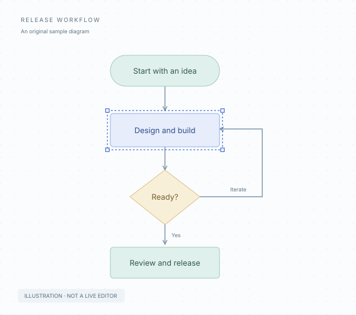

Your diagram, in focus.
Open a local .vsdx file, move between pages, and zoom into the details. The playground starts with an original sample.
Local-first · TypeScript · Early preview
A lightweight foundation for viewing Visio files on the web. Open a diagram, explore its pages, and inspect its shapes in your browser.
.vsdx viewer preview No file uploads No Microsoft Visio parity claim

A useful beginning
Start with the viewer. Follow the evidence as the implementation grows.
Open a local .vsdx file, move between pages, and zoom into the details. The playground starts with an original sample.
Supported cached geometry and text are rendered as SVG. Every integration uses the same renderer and document model.
Compatibility notes identify known approximations and unsupported content. A successful open is not a fidelity guarantee.
Initial supportEditing, native save, full ShapeSheet evaluation, and legacy .vsd support are not implemented. Rendering fidelity remains under development.
Built to embed
The shared lifecycle adapter mounts a custom element and forwards properties and events. Keep format logic in the core engine and UI behavior consistent.
This package is private and unpublished. These are local integration patterns, not five separately certified framework packages.
Explore the architecture →import { mountViewer } from '@christophervr/visio-viewer';
const viewer = mountViewer(host, {
events: {
'shape-select': (shape) => console.log(shape),
},
});
await viewer.load(file); // A local File or bytes
viewer.fit();
// When your view unmounts:
viewer.destroy();Give the host a height. Mount on the client. Destroy on unmount. Framework snippets illustrate lifecycle wiring; dedicated framework build verification is still required.
Before you begin
No. It is an initial browser viewer. Full Microsoft Visio parity is a long-term target, and this build does not provide editing, native save, or comprehensive rendering. The capability ledger separates current code from missing work.
The playground reads the File you select locally. It has no document upload, telemetry, or remote-file loading feature. The page assets are served by the host running this site.
Only part of the Visio format is interpreted. Complex geometry, formula evaluation, text layout, themes, images, and layers still have gaps. Read the compatibility notes for each document and compare important diagrams in Microsoft Visio.
Not in this build. Shape selection and zoom are viewing interactions. There is no native Visio writer or round-trip guarantee, and the source file is not changed.
No. It is an original, programmatically created scene that demonstrates the viewer. Genuine Visio-authored fixtures and reference render comparisons are required before claiming visual equivalence.